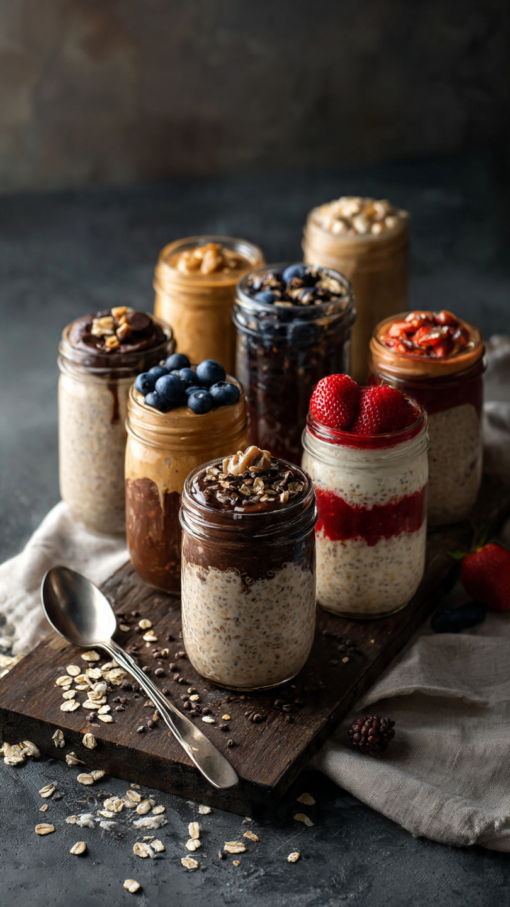

12 Overnight Oats Variations for Meal Prep That Actually Taste Good

As a busy meal prepper, I live for breakfasts I can make on Sunday and grab all week. The problem? Most overnight oats taste like wet cardboard by Wednesday.
I tested 12 versions that actually get BETTER after 2-3 days in the fridge. Each one uses rolled oats + Greek yogurt as the base for 15g+ protein. No cooking, no reheating, just open and eat.
The 5-Ingredient Base Formula
Use this for ALL recipes below. 1 jar = 1 serving
- 1/2 cup rolled oats
- 1/2 cup milk of choice
- 1/4 cup Greek yogurt
- 1 tbsp chia seeds
- 1 tsp sweetener + flavorings
Shake in a mason jar and refrigerate overnight. Lasts 5 days.
12 Overnight Oats Meal Prep Variations
1. Chocolate Peanut Butter
Base + 1 tbsp cocoa powder + 1 tbsp peanut butter + mini chocolate chips.
Calories: 380 | Protein: 18g
2. Strawberry Cheesecake
Base + 1/2 cup diced strawberries + 1 tsp vanilla + 2 tbsp cream cheese.
Calories: 340 | Protein: 17g
3. Apple Pie
Base + 1/2 diced apple + 1/2 tsp cinnamon + 1 tbsp maple syrup + walnuts.
Calories: 320 | Protein: 14g
4. Blueberry Lemon
Base + 1/2 cup blueberries + zest of 1/2 lemon + 1 tsp honey.
Calories: 310 | Protein: 15g
5. Carrot Cake
Base + 1/4 cup grated carrot + 1/2 tsp cinnamon + 1 tbsp raisins + walnuts.
Calories: 350 | Protein: 16g
6. Coconut Mango
Base with coconut milk + 1/2 cup diced mango + 1 tbsp shredded coconut.
Calories: 360 | Protein: 13g
7. Mocha
Base + 1 tbsp cocoa + 1 tsp instant coffee + 1 tbsp chocolate chips.
Calories: 330 | Protein: 18g
8. Banana Bread
Base + 1/2 mashed banana + 1/2 tsp cinnamon + 1 tbsp chopped walnuts.
Calories: 340 | Protein: 15g
9. Pumpkin Spice
Base + 2 tbsp pumpkin puree + 1 tsp pumpkin spice + maple syrup.
Calories: 325 | Protein: 15g
10. Raspberry White Chocolate
Base + 1/2 cup raspberries + 1 tbsp white chocolate chips.
Calories: 370 | Protein: 19g
11. Cookies & Cream
Base + 1 scoop vanilla protein powder + 2 crushed Oreos on top.
Calories: 390 | Protein: 20g
12. Tiramisu
Base + 1 tsp instant coffee + 1 tbsp cocoa + 1 tbsp mascarpone.
Calories: 360 | Protein: 16g
Get My Free Overnight Oats Starter Kit 🎁
Instant download: 12 recipes + printable jar labels + shopping list
Download Free Now